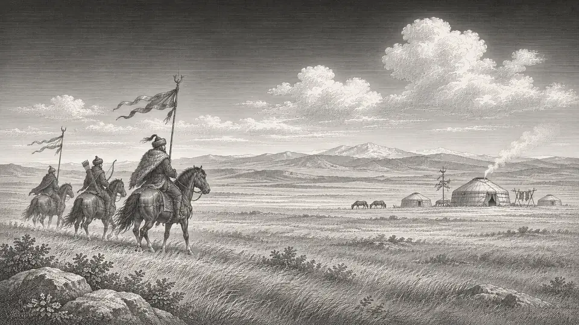
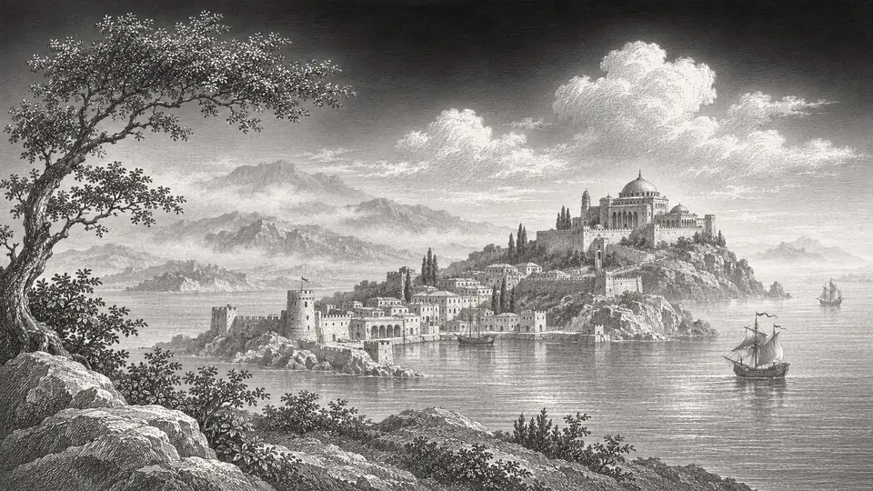
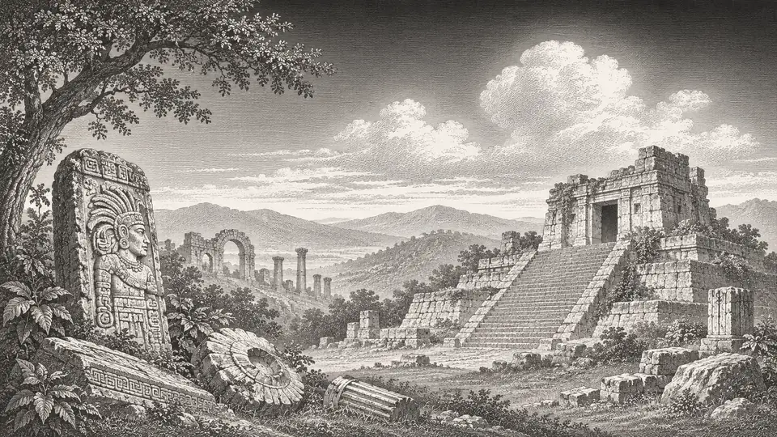
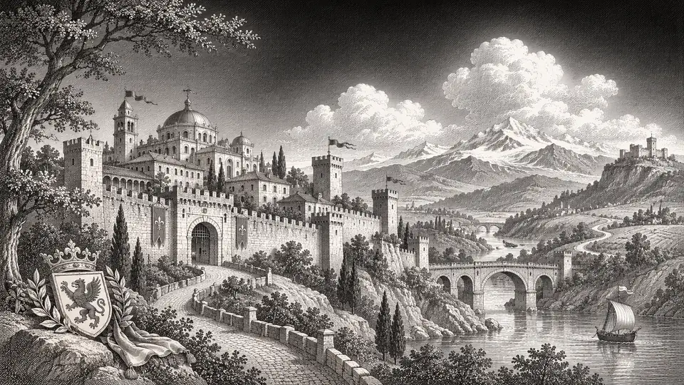

ARCHIVO PERSONAL
Un atlas privado.
Para consultar las fichas, iniciá sesión con tu cuenta de Palabra Viva.
Para consultar las fichas, iniciá sesión con tu cuenta de Palabra Viva.
Imperios que se extinguen, repúblicas que sobreviven entre gigantes, reinos de frontera, ciudades santas y proyectos políticos improbables.
Un atlas de formas de soberanía, memoria, liturgia, ruina e imaginación histórica. Ciento dieciocho mundos históricos e imaginarios para leer, comparar y seguir explorando.

Ocho fichas nuevas por sección histórica y catorce literarias, con textos y fuentes. El canon original permanece intacto.

Hunos, xiongnu, rouran, göktürks y sus sucesores. Cortes móviles, confederaciones y diplomacias de las estepas.
8 fichas↗
Reinos de islas, oasis y rutas marginales: de Ryūkyū y Champa a Kongo, Ternate y Wadai.
8 fichas↗
Mundos que sobreviven en escrituras, ruinas, sellos y objetos. No siempre fueron estados únicos ni pueblos extinguidos.
8 fichas↗
De la Utopía de Moro a las monarquías de Tolkien y los mundos de Swift, Orwell y Nabokov.
14 fichas↗Explorá por tradición política, período y afinidad. La primera selección conserva sus datos originales; las nuevas colecciones incorporan bibliografía, universos literarios y preguntas de investigación.
No se encontraron entidades con esos criterios.
El listado no pretende jerarquizar los estados por poder o extensión. Reúne instituciones, relatos y lugares que tienen una densidad simbólica particular: la burocracia de un imperio, la persistencia de una ciudad, las aspiraciones de una comunidad.
El núcleo de ochenta entidades conserva las referencias del Excel original. Las incorporaciones tienen su propia selección de lecturas y documentos, y distinguen entre testimonios propios, fuentes externas y reconstrucciones posteriores. Las fechas son aproximadas y los vínculos de catálogo funcionan como búsquedas.